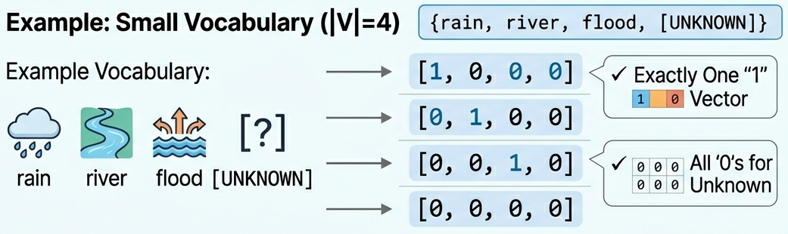
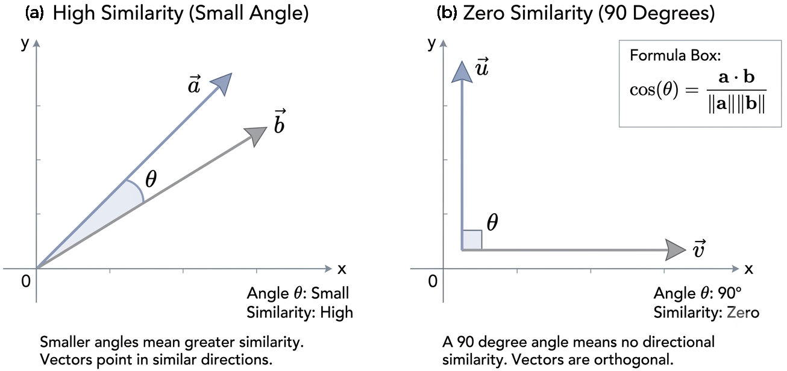
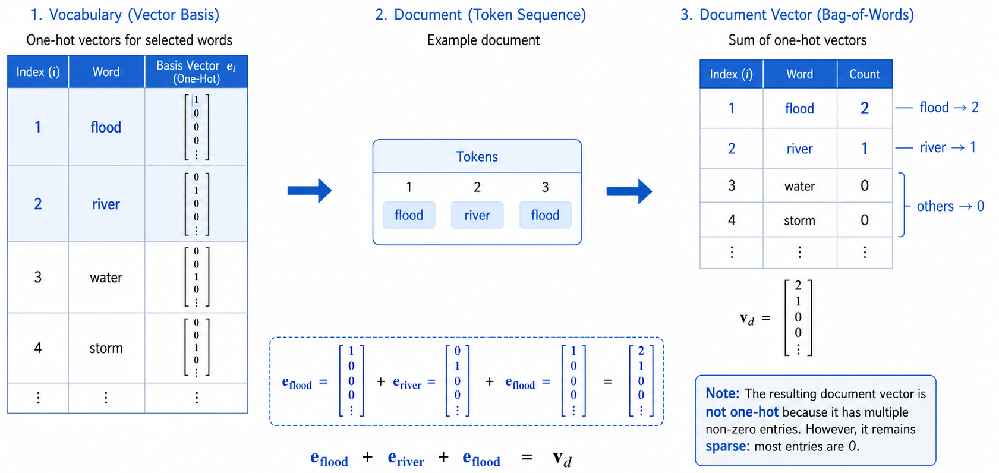

Remark
These lecture notes are in early access and will continue to evolve based on classroom experience and feedback.
2.1. From Tokens to Vectors: Classical Encoders#
Section Goal
By the end of this section you will understand why machine learning models need numerical vectors, be able to construct one-hot and count-based representations by hand and with scikit-learn, and critically evaluate the limitations of these representations as a springboard for the richer encodings introduced in later sections.
2.1.1. Learning objectives#
By the end of this section, you should be able to:
Explain why we need numerical vector representations of text for machine learning models.
Define and construct one-hot encodings for tokens and documents.
Build a vocabulary from a corpus and represent tokens as integer indices.
Construct count-based document–term matrices using scikit-learn’s
CountVectorizer.Interpret the structure of document–term matrices on small corpora.
List the key limitations of one-hot and count-based representations.
2.1.2. Why vectorize text?#
Most machine learning models—from logistic regression to deep neural networks—operate on fixed-length numerical vectors: arrays of real numbers that the model can add, multiply, and differentiate through. Raw text, however, is variable-length, symbolic, and structured. A sentence is not a number; it is a sequence of tokens with grammar and meaning.
The purpose of vectorization (also called feature extraction or encoding) is to map documents, sentences, or tokens into a mathematical space where:
Closeness reflects similarity: texts that are semantically related should have nearby representations.
Dimensions correspond to features: each coordinate measures some meaningful property (e.g., “does this word appear?”).
Downstream models can consume the input: classifiers, regressors, and sequence models all expect numerical arrays, not strings.
Classical encoders build these vectors directly from token identities or counts, with no learned parameters. They are transparent, interpretable, and surprisingly strong baselines for many tasks.
Why not just feed strings to a model?
Modern deep-learning libraries (PyTorch, TensorFlow) require numerical tensors as input. Even if a model ultimately “understands” language (like a large language model does), somewhere in its pipeline a text string is converted to numbers—through an embedding layer or tokenizer. Classical encoders make this conversion explicit and interpretable, and understanding them is essential for understanding more complex approaches.
Intuition: a bag of coloured tiles
Imagine replacing each word with a uniquely coloured tile and dropping all the tiles from a document into a bag. The bag does not remember the order of the tiles, but you can describe its contents by listing how many tiles of each colour it contains. This is exactly what a count-based document vector does: each “colour” is a vocabulary word, and each count is how many times that word appeared.
2.1.3. Vocabulary construction#
Before we can represent any token numerically, we need a vocabulary — a fixed, finite set of strings that our encoder recognizes. The vocabulary maps each known word to a unique integer index.
Key Terms
Vocabulary (\(V\)): the set of all word types the encoder is aware of. A type is a unique string (e.g., “flood”); each occurrence of that string in text is called a token.
OOV (out-of-vocabulary): any token whose string is not in the vocabulary. Classical encoders typically ignore OOV tokens or map them to a special
<UNK>entry.Vocabulary size (\(|V|\)): the total number of distinct entries. For real corpora this ranges from thousands to hundreds of thousands.
When you train a vectorizer on a corpus you are essentially deciding: which strings count as features? Everything not in the vocabulary is invisible to the model at inference time.
2.1.3.1. Step-by-step vocabulary building#
Vocabulary size: 18
{'basin': 0, 'conditions': 1, 'downstream': 2, 'drought': 3, 'flood': 4, 'for': 5, 'heavy': 6, 'in': 7} ...
Running this on the three-document corpus produces a vocabulary of roughly 18 words. In real settings, you would add preprocessing steps (removing punctuation, stopwords, etc.) and limit vocabulary size to the top-k most frequent terms.
Why sort the vocabulary?
The specific ordering of words in the vocabulary is arbitrary — what matters is consistency: the same word must always map to the same index so that vectors produced from different documents are comparable. Sorting alphabetically is one common convention; another is sorting by frequency (most frequent first). Scikit-learn uses alphabetical order by default.
2.1.4. One-hot encodings#
The simplest way to represent a token numerically is a one-hot vector: a binary vector of length \(|V|\) with a single 1 at the position corresponding to the word’s index and 0s everywhere else [Wang, 2023].
Here \(i\) is the vocabulary index of the target word and \(|V|\) is the vocabulary size.
Properties of one-hot vectors:
All one-hot vectors are orthogonal: \(\mathbf{e}_i \cdot \mathbf{e}_j = 0\) for \(i \neq j\). Two distinct words are always maximally “different.”
The Euclidean distance between any two one-hot vectors is \(\sqrt{2}\), regardless of whether the words are semantically related.
Vectors are sparse: for a vocabulary of 50,000 words, a one-hot vector has exactly one
1among 49,9990s. Storing or computing with thousands of such vectors is expensive, which is one motivation for the dense embeddings introduced in Section 3.
{kind=link}

Fig. 2.2 One-hot token representation, where each word is mapped to a sparse binary vector with a single active position; unknown tokens are shown here as an all-zeros vector.#
2.1.4.1. Example: one-hot token representation#
rain -> [1, 0, 0, 0]
river -> [0, 0, 0, 1]
flood -> [0, 1, 0, 0]
unknown -> [0, 0, 0, 0]
Notice that the vector for "unknown" is the all-zeros vector — a common handling for OOV tokens in simple encoders. More sophisticated approaches use a dedicated <UNK> token with its own index, so the model at least knows that an unknown word appeared.
2.1.4.2. One-hot vectors do not capture similarity#
A critical limitation is that one-hot vectors encode no notion of similarity between words. Let us verify this using cosine similarity, a standard measure of similarity between two vectors [Chai, 2023]:
Cosine similarity equals 1 for identical direction, 0 for orthogonal vectors, and −1 for opposite direction. For sparse one-hot vectors, any two different words are orthogonal:
{kind=link}

Fig. 2.3 Cosine similarity measures the angle between vectors: smaller angles indicate greater similarity, while orthogonal vectors have cosine similarity 0.#
Similarity (Doc A, Doc B): 0.95
Similarity (Doc A, Doc C): 0.00
Every pair of distinct one-hot vectors has a cosine similarity of \(0\)—they are all treated as perfectly orthogonal, regardless of how semantically related they actually are. In this ‘one-hot’ view, ‘flood’ and ‘inundation’ look no more similar than ‘flood’ and ‘philosophy’.
However, by moving to count-based vectors, we begin to capture relationships through shared context. When documents share vocabulary counts, their vectors start to align, producing non-zero similarity scores. While this is a significant improvement, it still relies on exact word matches. To truly capture that ‘flood’ and ‘inundation’ are similar even when they don’t appear in the same document, we turn to dense embeddings—the richer, continuous representations explored in the following sections, which map words into a shared space based on their actual meaning.
2.1.5. Document–term matrices with scikit-learn#
A document–term matrix (DTM) [Atteveldt et al., 2022] generalizes one-hot encodings from individual tokens to full documents. Instead of representing one word, each row represents a document as the sum of the one-hot vectors for all tokens it contains — which is just the count of each vocabulary word in the document.
Document vector = sum of token one-hots
If a document contains the words [“flood”, “river”, “flood”], its document vector has flood → 2, river → 1, all others → 0. This is equivalent to adding the one-hot vectors: e_flood + e_river + e_flood = [2, 1, 0, …]. The result is no longer a one-hot vector (multiple non-zero entries), but it is still sparse.
{kind=link}

Fig. 2.4 Bag-of-Words Model as a Sum of One-Hot Vectors#
Scikit-learn’s CountVectorizer automates vocabulary construction and DTM creation:
| basin | conditions | downstream | drought | flood | for | heavy | in | increases | issued | northern | persist | rain | region | risk | river | the | warnings | |
|---|---|---|---|---|---|---|---|---|---|---|---|---|---|---|---|---|---|---|
| doc1 | 1 | 0 | 0 | 0 | 1 | 1 | 0 | 0 | 0 | 1 | 0 | 0 | 0 | 0 | 0 | 1 | 1 | 1 |
| doc2 | 0 | 1 | 0 | 1 | 0 | 0 | 0 | 1 | 0 | 0 | 1 | 1 | 0 | 1 | 0 | 0 | 1 | 0 |
| doc3 | 0 | 0 | 1 | 0 | 1 | 0 | 1 | 0 | 1 | 0 | 0 | 0 | 1 | 0 | 1 | 0 | 0 | 0 |
Matrix shape: (3, 18) (3 documents × 18 terms)
Each row is a sparse numerical summary of the document. Documents that share words will have overlapping non-zero columns, forming the basis for simple similarity measures such as cosine distance between document vectors.
fit_transform vs. transform
vectorizer.fit_transform(corpus) does two things in one call: it fits (builds the vocabulary from the corpus) and then transforms (converts each document to a vector). At inference time you should call vectorizer.transform(new_docs) only—never re-fit on new data, or the vocabulary and feature indices will change, making old vectors incomparable with new ones.
2.1.5.1. Controlling vocabulary size#
For large corpora, the raw vocabulary can exceed 100,000 words. A common strategy is to keep only the top-k most frequent terms and remove stopwords — high-frequency function words (articles, prepositions, etc.) that carry little distinctive meaning:
Top-10 vocabulary: ['basin' 'conditions' 'downstream' 'drought' 'flood' 'heavy' 'increases'
'issued' 'northern' 'persist']
Matrix shape: (3, 10)
Removing English stopwords (stop_words="english") trims function words that appear in nearly every document and carry little discriminative signal. The impact of this choice is task-dependent; for example, in sentiment analysis, negation words like “not” are stopwords but are critically important.
Other useful CountVectorizer parameters:
Parameter |
Default |
Purpose |
|---|---|---|
|
None (keep all) |
Retain only the top-k most frequent terms |
|
None |
Remove a predefined or custom list of words |
|
1 |
Ignore terms appearing in fewer than n documents |
|
1.0 |
Ignore terms appearing in more than p fraction of documents |
|
(1,1) |
Include n-grams up to the given range (see Section 2) |
|
True |
Convert all tokens to lowercase before counting |
2.1.6. Co-occurrence context#
One-hot vectors and raw count matrices capture term identity, not context. However, context turns out to be deeply informative: words that frequently appear near each other are often semantically related. A co-occurrence matrix records, for each pair of words, how often they appear within a fixed window of each other:
flood : [('warning', 1), ('risk', 1)]
river : [('warning', 1), ('basin', 1), ('downstream', 1)]
drought : [('conditions', 1), ('deficit', 1)]
Words that share contexts (like “flood” and “river”) naturally have higher co-occurrence counts. This observation is the foundation of distributional semantics — the idea that meaning is captured by context. Section 2.3 develops this intuition into dense word embeddings.
2.1.7. Design choices and limitations#
When constructing classical encoders, several design choices matter:
Choice |
Options |
Impact |
|---|---|---|
Vocabulary size |
All tokens vs. top-k |
Dimensionality, sparsity, OOV handling |
Tokenization |
Whitespace, regex, subword |
Which strings become vocabulary items |
Case normalization |
Lowercase vs. preserve case |
Deduplication of vocabulary |
Stopword removal |
None, standard list, domain list |
Feature count, noise reduction |
Minimum frequency ( |
Integer threshold |
Filters noisy low-count terms |
Fundamental limitations of pure one-hot and raw count representations:
No semantic similarity — words that never appear together get identical distance regardless of their meaning. “Flood” and “inundation” are as dissimilar as “flood” and “philosophy.”
Order is ignored — “the dog bit the man” and “the man bit the dog” get identical representations.
High dimensionality — a vocabulary of 50,000 terms means 50,000-dimensional vectors; almost all values are zero. This “curse of dimensionality” affects storage, computation, and some learning algorithms.
No sub-word structure — “run”, “running”, and “runner” are treated as completely different items unless preprocessing (stemming, lemmatization) is applied.
These limitations motivate the richer representations introduced in the following sections.
Key Takeaways
One-hot vectors assign each vocabulary word a unique axis; they are orthogonal, sparse, and capture no similarity information.
A document–term matrix is the sum of one-hot vectors for all tokens in a document: rows are documents, columns are vocabulary words, entries are counts.
Vocabulary size, tokenization, and stopword choices significantly affect the resulting representation.
Classical count encoders are an essential baseline and building block, but their limitations (sparsity, no similarity, no word order) motivate weighting schemes (TF–IDF, Section 2.2) and dense embeddings (Sections 2.3–2.4).
2.1.8. Exercises and discussion#
Manual one-hot design Construct a small vocabulary from a set of 5–10 domain-specific terms (e.g., climate hazards or clinical conditions). Write down the one-hot vectors for each term. Calculate the Euclidean distance and cosine similarity between every pair, and discuss which relationships are captured and which are missing.
Exploring document–term matrices Using
CountVectorizer, build a document–term matrix for a small corpus of news headlines on a topic of your choice. Inspect the vocabulary and the matrix. Which tokens dominate? Are there tokens you would filter out or merge (e.g., synonyms, morphological variants)? Try addingmin_df=2and observe the effect on vocabulary size.OOV handling strategies Modify the
one_hotfunction to add an<UNK>token at the end of the vocabulary vector instead of returning an all-zeros vector for unseen words. Discuss the trade-offs: when does an explicit<UNK>representation help, and when could it cause problems?Sparsity and memory For a vocabulary of \(|V| = 20{,}000\) words and a corpus of \(N = 10{,}000\) documents, what is the total number of entries in a dense document–term matrix? If on average each document contains 50 distinct words, how many entries are non-zero? Compute the sparsity ratio (fraction of zero entries) and discuss why scikit-learn stores these matrices in a sparse format by default.
Connecting to labs In the
l201_text_processing_one_hot_encodinglab, you will work with a slightly larger corpus and visualize encodings. After completing the lab, revisit this section and note how your understanding of one-hot and count-based representations has changed.